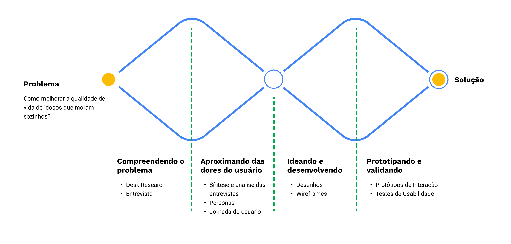
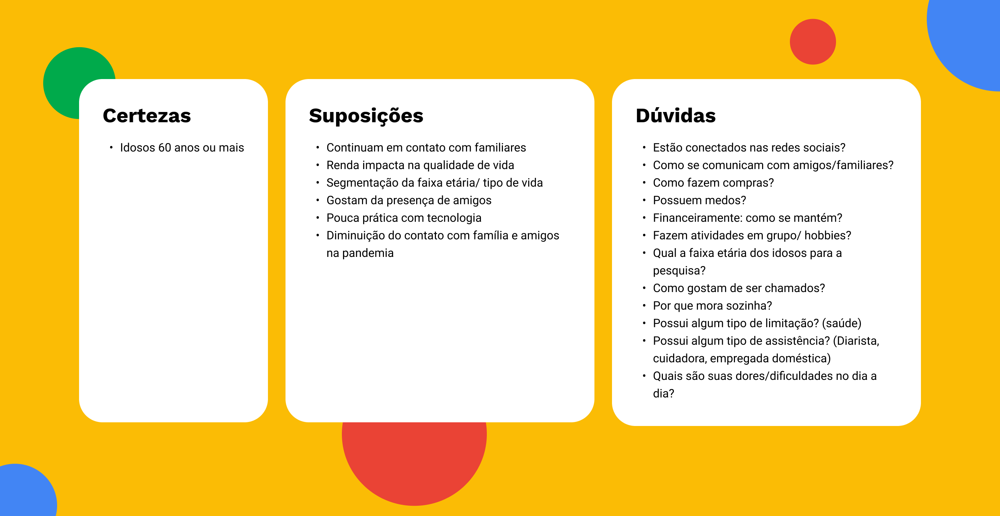
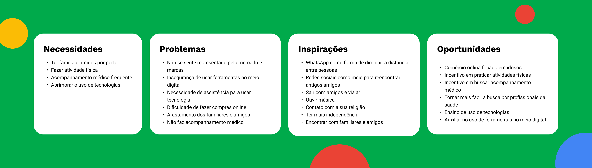
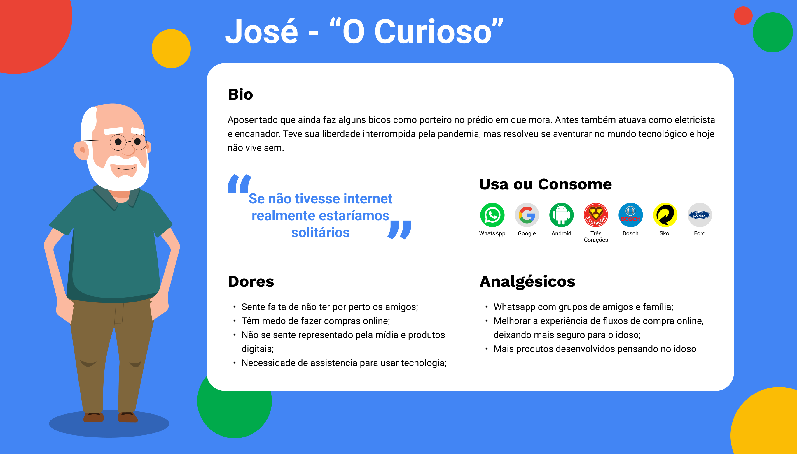
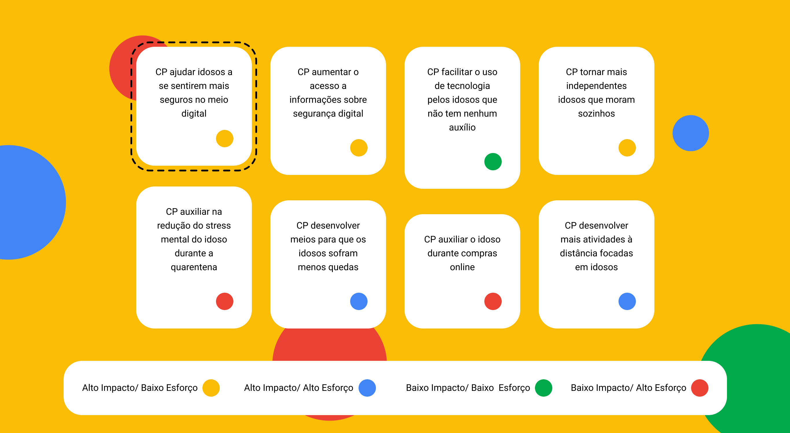
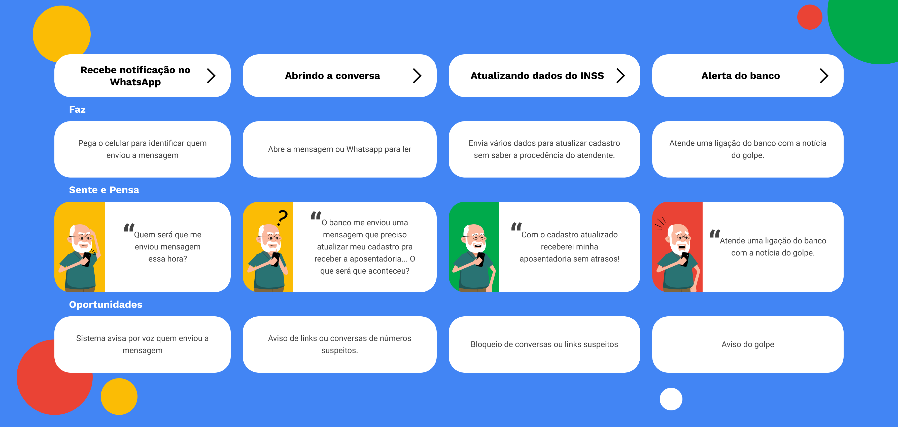
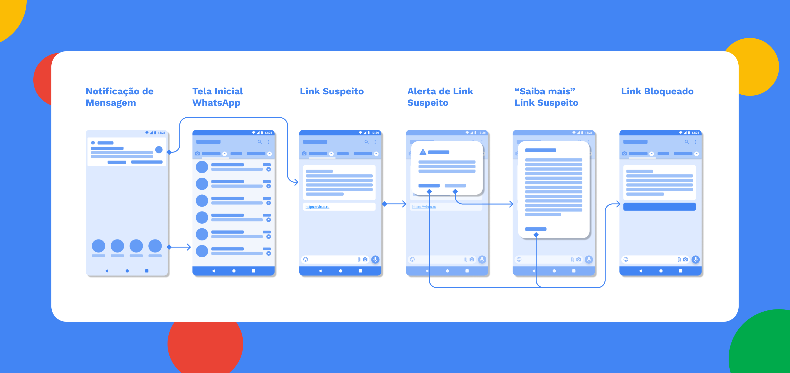
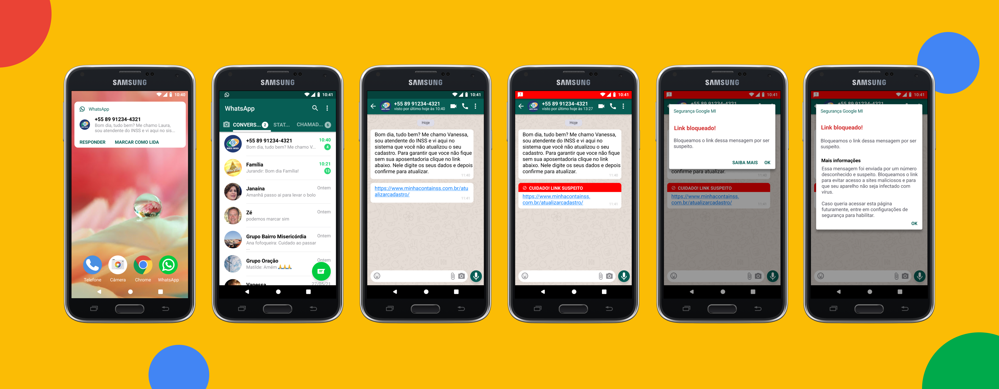
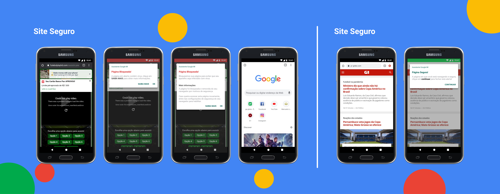
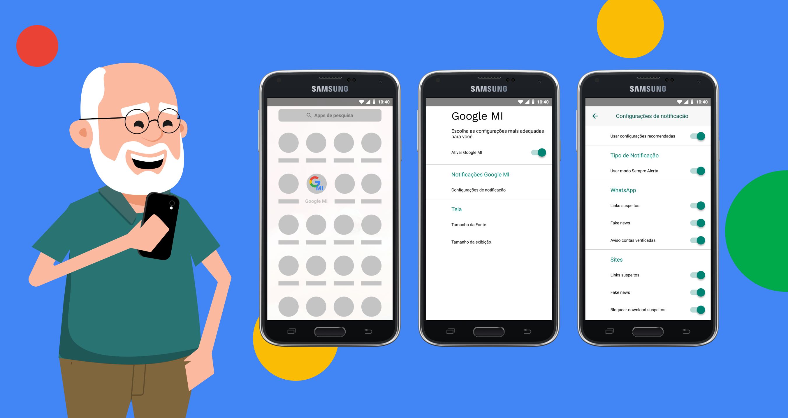

Processos
Decidimos em abordar o nosso problema seguindo o duplo diamante. Na imagem abaixo, é possivel ver as etapas e o que fizemos em cada uma delas.
Desk Research
Inicialmente, buscamos entender e destrinchar alguns conceitos do desafio: O que é qualidade de vida, quem é a pessoa idosa e o que significa morar sozinha. Criamos uma matriz CSD com o que tínhamos de certezas, dúvidas e suposições sobre o nosso público e a partir dela realizamos uma desk research para conhecer melhor o nosso público, suas particularidades, estilo de vida, dores e desafios.
Com isso, descobrimos alguns dados muito importantes que nos ajudaram a avançar com o projeto e resolução do problema.
- A população idosa cresceu
- A população atual de idosos representa 14% da população brasileira. Em 2020 esse grupo passou para 29,9 milhões. A população de idosos aumentou pouco mais do que 11 vezes em comparação aos últimos 70 anos, onde tínhamos uma população de 2,6 milhões de idosos no Brasil.
- Idosos mais inseridos no meio digital
- 58% dos idosos possuem acesso à internet em seus smartphones e 85% das pessoas acima de 55 anos já utilizaram a internet para algum tipo de pesquisa de produto ou serviço.
- A pandemia encadeou esse aumento
- Os idosos foram um dos grupos mais afetados durante a pandemia, por isso muitos deles tiveram que aprender a usar tecnologias para continuarem interagindo com seus amigos e familiares na segurança de suas casas.
- 7 em cada 10 empresas acreditam que idosos não usam tecnologia
- Mesmo encontrando dados que facilitam a visualização e a grande quantidade de público com maior interesse no meio digital, 70% das empresas brasileiras acreditam que esse público não acompanha as evoluções que acontecem no cenário tecnológico.
Durante a pesquisa, decidimos delimitar o nosso público em idosos entre 60 a 74 anos. De acordo com a OMS, idoso é todo indivíduo com 60 anos ou mais. Entendemos que as diferentes faixas etárias possuem necessidades e dores distintas, em razão disso acreditamos que delimitar a idade do nosso público nos ajudaria a entender pontualmente suas necessidades e dores a fim de trabalharmos numa solução mais efetiva.
A partir dos dados coletados na desk research, realizamos um roteiro de pesquisa qualitativa para entender algumas informações com mais profundidade. Optamos por não realizar uma pesquisa quantitativa, porque com a entrevista qualitativa seria possível entender os valores pessoais, significados, dores, visões de mundo e insights que nos ajudariam a entender melhor o nosso público.
Entrevistas
Realizamos 12 entrevistas qualitativas com idosos entre 60 a 74 anos e encontramos alguns pontos de dores, necessidades, inspirações e oportunidades em comum. A partir disso, realizamos uma matriz de informações com as principais informações das entrevistas.
A partir dos dados coletados na Matriz de Informações, estruturamos quem é a nossa persona: “José — o curioso” e entendemos suas necessidades, dores e frustrações.
 Detectando Problemas
Após a construção da persona, entendemos quais eram as principais dores e necessidades em diversos setores: saúde e bem estar, facilitação do uso de tecnologia, sociabilidade no meio digital e segurança na internet. Utilizamos do "Como Podemos" para pensar em soluções para as principais dores encontradas. Posteriormente, colocamos todas as possíveis soluções dos problemas detectados em uma Matriz de Esforço/Impacto e percebemos que a maioria das nossas soluções estavam interligadas a uma dor que identificamos ser latente:
“Como podemos ajudar idosos a se sentirem mais seguros no mundo digital”
Percebemos que os idosos não utilizam todas as possibilidades oferecidas no meio digital porque se sentem inseguros, como por exemplo, fazer compras online ou usar redes sociais.
Para entender um pouco mais sobre o dia a dia do nosso usuário e sua dor dentro do mundo digital, criamos uma jornada exemplificando um golpe realizado por WhatsApp, um problema bem recorrentes entre a população mais idosa, e sinalizamos algumas oportunidades.
Solução
Sendo assim, para trazer mais segurança e confiança na navegação, desenvolvemos uma funcionalidade para a assistente do sistema operacional Android — Google MI (Google Melhor Idade) com foco em auxiliar o idoso. No WhatsApp o sistema identifica links suspeitos, fake news e em navegadores, avisamos sobre sites seguros para compras, sites suspeitos ou qualquer notificação que possa ajudar nosso usuário no decorrer de sua jornada em “locais” perigosos no mundo digital.
Escolhemos o sistema Android, pois é o mais utilizado pelos brasileiros e tem um melhor custo benefício. Optamos por criar uma nova funcionalidade para a Google Assistente, por ser mais integrada ao sistema e possibilitar levar a funcionalidade a mais aplicativos dentro do sistema.
Percebemos que os idosos não utilizam todas as possibilidades oferecidas no meio digital porque se sentem inseguros, como por exemplo, fazer compras online ou usar redes sociais.
Protótipos e Testes de Usabilidade
Depois de Crazy 8's e desenharmos alguns rabiscoframes, fizemos um fluxograma com o principal aplicativo utilizado pelo nosso público, o WhatsApp. Simulamos como funcionaria a nova funcionalidade alertando o usuário de um possível link malicioso
Após o fluxograma iniciamos o desenvolvimento de protótipos das funções iniciais e com eles prontos começamos a realizar testes de usabilidade.
Realizamos testes de usabilidade com 7 pessoas. Nos primeiros testes simulamos uma tela do WhatsApp, onde o usuário recebia uma notificação com um link suspeito. O objetivo do teste era identificar se o usuário identificaria o alerta de mensagem suspeita em sua conversa. Sendo assim, elencamos uma tarefa para tentar entender se os usuários conseguiriam de fato:
- Acessar a notificação do WhatsApp com o suposto link suspeito.
- Visualizar o link suspeito.
- Identificação da barra de alerta.
Percebemos que parte dos usuários que realizaram o teste, demoraram para identificar a barra de alerta em cima da mensagem, sendo que alguns sequer chegaram a identificá-la. Durante o teste os usuários tinham a liberdade de nos contar como se sentiram ao realizá-lo e alguns deles, inclusive, acharam que o alerta sobre links suspeitos já era algo existente nos seus celulares (consideraram o alerta uma mensagem positiva para sua jornada).
Desta forma, como parte das pessoas que realizaram o teste não percebiam a notificação de alerta em vermelho na parte superior da interface, decidimos criar um segundo alerta que ficasse mais visível na tela em cima da mensagem enviada.
Posteriormente, após essa mudança no lugar do aviso de alerta na tela, realizamos novos testes que nos mostraram que os usuários perceberam a notificação de alerta rapidamente. Já que eram obrigados a “pausar” a jornada no momento em que um aviso era mostrado em suas telas.
Para isso, criamos mais um tipo de notificações — chamado “sempre alerta”. Assim os usuários poderão escolher o tipo de aviso que preferem conforme seu modo de uso e necessidade.
 Telas de configuração do Google MI
Pensando em melhorar a experiência do nosso usuário, decidimos por criar um local para que pudesse configurar quais notificações desejasse. Para isso, tentamos entender qual local poderia se encaixar tal tela no sistema Android. Vimos em configurações as opções de Acessibilidade, porém sua complexidade poderia mais dificultar do que ajudar nesse momento.
Criamos assim uma tela de configuração apenas para o Google MI, levando as opções de configurações de notificações da assistente. Lá também temos opções adicionais de ajustes de tamanho de fonte e tamanho de exibição de tela. O Google Mi ativaria automaticamente de acordo com a idade do usuário a partir da data de nascimento da conta Google.
Considerações Finais
Participar do bootcamp de ux design da Tera foi uma experiência incrível. Ter contato com os processos, ferramentas e frameworks utilizados no desenvolvimento de produtos foi muito importante para compreender melhor todo o conhecimento teórico e também como é a prática na vida real. Sem contar a convivência com pessoas de outras regiões, com visões diferentes e muito enriquecedoras que contribuíram bastante para meu desenvolvimento pessoal.
O projeto foi desenvolvido em grupo, todos os processos passaram na mão de todos os integrantes. Tivemos auxílio do Felipe Carriço em algumas mentorias durante a jornada do desafio.
Com esse desafio aprendi que mesmo com o crescimento da população idosa, muitas empresas ainda não estão olhando para esse público com a atenção necessária fazendo com que eles se sintam menos inseridos no meio digital. O mercado para idosos é pouco explorado e existem várias oportunidades de negócio, considerando as necessidades e dores que listamos durante esse artigo.